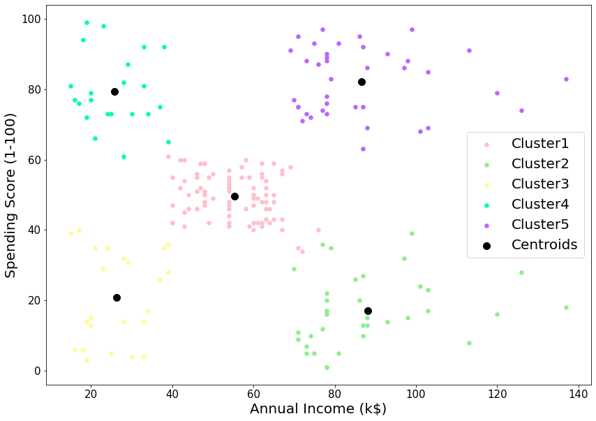

K-means clustering
Introduction
K-means is still one of the fundamental clustering algorithms. It is used in such diverse fields as Natural Language Processing (NLP), social sciences and medical sciences.
The core idea behind K-means is that we want to group data in clusters. Data points will be assigned to a specific cluster depending on it's distance to a cluster's center, usually called the centroid.
It is important to note that typically, the mean distance to a centroid is used to partition the clusters, however, difference distances can be used and different pivot points. An example is the K-medoids clustering algorithm.
We will define the two main steps of a generic K-means clustering algorithm, namely the data assignement and the centroid update step.
Data assignement
The criteria to determine whether a point is closer to one centroid is typically an [Euclidean distance](distance-metrics.html#Euclidean distance L2) ($L^2$) . If we consider a set of $n$ centroids $C$, such that
$$ C = \lbrace c_1, c_2, \dots, c_n \rbrace $$
We assign each data point in $\mathcal{D}=\lbrace x_1, x_2, \dots, x_n \rbrace$ to the nearest centroid according to its distance, such that
$$ \underset{c_i \in C}{\arg\min} \; dist(c_i,x)^2 $$ As mentioned previously $dist(\cdot)$ is typically the standard ($L^2$) [Euclidean distance](distance-metrics.html#Euclidean distance L2). We define the subset of points assigned to a centroid $i$ as $S_i$.
Centroid update step
This step corresponds to updating the centroids using the mean of add points assign to a cluster, $S_i$. That is
$$ c_i=\frac{1}{|S_i|}\sum_{x_i \in S_i} x_i $$
Partitioning
Different algorithms can be used for cluster partitioning, for instance:
- PAM
- CLARA
- CLARANS
PAM
To illustrate the PAM partitioning method, we will use a synthetic dataset created along the guidelines in synthetic data generation.
Elbow method
In order to use the "Elbow method" we calculate the [Within-Cluster Sum of Squares (WCSS)](distance-metrics.html#Within-cluster sum of squares (WCSS)) for a varying number of clusters, $K$.
import numpy as np
import matplotlib.pyplot as plt
import pandas as pd
import sklearn
import warnings
warnings.filterwarnings("ignore")
dataset = pd.read_csv('data/mall-customers.zip')
X = dataset.iloc[:, [3, 4]].values
from sklearn.cluster import KMeans
wcss = []
for i in range(1, 11):
kmeans = KMeans(n_clusters = i, init = 'k-means++', random_state = 42)
kmeans.fit(X)
wcss.append(kmeans.inertia_)
from plotutils import *
plt.plot(range(1, 11), wcss)
plt.xlabel('Number of clusters')
plt.ylabel('WCSS')
plt.show()

kmeans = KMeans(n_clusters = 5, init = "k-means++", random_state = 42)
y_kmeans = kmeans.fit_predict(X)
ps = 30
plt.scatter(X[y_kmeans == 0, 0], X[y_kmeans == 0, 1], s = ps, c = colours[0], label = 'Cluster1')
plt.scatter(X[y_kmeans == 1, 0], X[y_kmeans == 1, 1], s = ps, c = colours[1], label = 'Cluster2')
plt.scatter(X[y_kmeans == 2, 0], X[y_kmeans == 2, 1], s = ps, c = colours[2], label = 'Cluster3')
plt.scatter(X[y_kmeans == 3, 0], X[y_kmeans == 3, 1], s = ps, c = colours[3], label = 'Cluster4')
plt.scatter(X[y_kmeans == 4, 0], X[y_kmeans == 4, 1], s = ps, c = colours[4], label = 'Cluster5')
plt.scatter(kmeans.cluster_centers_[:, 0], kmeans.cluster_centers_[:, 1], s = 100, c = 'black', label = 'Centroids')
plt.xlabel('Annual Income (k$)')
plt.ylabel('Spending Score (1-100)')
plt.legend()
plt.show()
